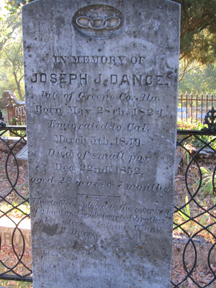
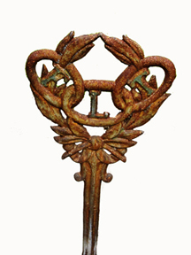
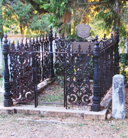
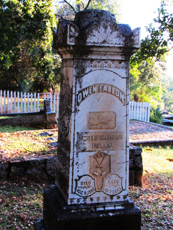
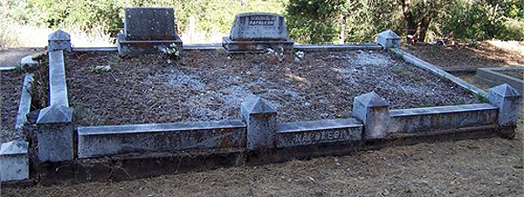
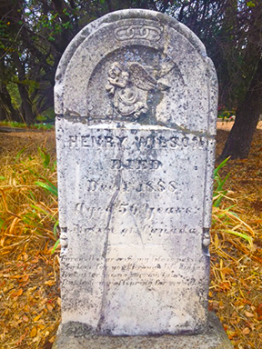
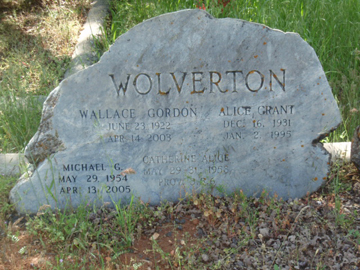
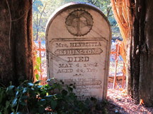

COLUMBIA I.O.O.F. CEMETERY RECORDS.
Independant Order of Odd Fellows
Locator

Early tombstone - 1852.

IOOF Cemetery north
IOOF Cemetery south
History Note: Odd Fellows started in Columbia in 1854. American Odd Fellowship is regarded as being founded in Baltimore in 1819, by Thomas Wildey, and the following year affiliated with the Manchester Unity. Within a few years the new American separated from the English Orders and formed the Independent Order of Odd Fellows.
Grave Note: The following numbers have been placed in the public cemetery and more may follow as they are not "really" IOOF internees: 55 to 68 are located along the Main road and fence of the Masonic graveyard.
A.
ALDRIDGE, Cornelia - 28 Born in Columbia 10 Sept 1888 - Died 16 Feb 1933 age 44 (dates of buried from C.H. Burden records) Note: wife to William Aldridge. Cornelia's father was Thomas Kross Hollans and mother was Henrietta N. Cornelia died of a cerebral hemorrhage.
ALEXANDER, Jobe Joseph - 4 Born 28 February 1899, on a farm in rural Lawrence County, Mississippi to Minnie Alice Couch and Toney Alexander. Died 4 August 1953 in Calaveras County.
ALEXANDER, Mary Elizabeth (Souza) - 4 Born in Columbia 9 March 1895 - Died in Angels Camp 7 Sept 1975 Note: Wife to Jobe.
ALLEN, Alexander - 154 Born c1826 - Died 8 Sept 1906 (dates of buried from C.H. Burden records)
ALLEN, George L. - 81. 1880-1897
ALLISON, Mr. - 111b. Note: In with MORGAN, George.
ANDERSON, Andrew - 128 GAR plot.
ARATA, Paul - 222.
ATHERTON, Charles - 20 Born c1866 - Died 3 May 1937 (dates of buried from C.H. Burden records).
ATHERTON, Sarah - 20 Born c1840 - Died .
ATHERTON, Isaac - 20 Born c1834 - Died 25 May 1900.
AZEVEDO, Antone - 14 Born c1870 -Died 16 Mar 1917 Note: #7 - (dates of buried from C.H. Burden records).
AZEVEDO, John P. - 14 Born c1876 - Died 18 Apr 1952 (dates of buried from C.H. Burden records).
AZEVEDO, Joseph - 14 Born c1834 - Died 17 Apr 1925 (dates of buried from C.H. Burden records).
AZEVEDO, Leanora - 14 Born c1877 - Died 14 Jan 1894 (dates of buried from C.H. Burden records).
AZEVEDO, Mary K. - 14.
AZEVEDO, Mary - 13.

Odd Fellows Marker.
B.
BACHICH, ? - 198.
BAIRD, Roy T. - 20.
BANNISTER, Katherine A. - 176 Born in Columbia 24 Aug 1868 - Died 26 Nov 1933 (dates of buried from C.H. Burden records) Note: Married to William Dennison Bannister. Parents were Frank J. Schoettgen of Germany & Johanna Bonmen of Germany.
BANNISTER, William A. - 176 Born 1894 - Died 24 Mar 1895 (dates of buried from C.H. Burden records).
BANNISTER, William Dennison - 176 Born c1862 - Died 3 Feb 1928 (dates of buried from C.H. Burden records).
BARNES, Robert V. - 252 Born 13 Nov 1905 - Died 24 Sept 1988
BARNES, Ida R. - 252.
BASYE, Wayne, Sandy, Marvin L., Betty K. - 211
BATES, Leonard W. - 253 Born in Missouri 8 Dec 1900 - Died 26 Sept 1965. Note: Construction worker. Married to Mame. Parents were William Bates of Missouri & Myrtle Redford of Kentucky. Died of heart failure.
BATES, Marie Doe - 254
BEAUVAIS, Andrew Bertrand A. C. - 100
BEYNON, Jane - 183 Born c1831 - Died 16 Sept 1907 (date of death from C.H. Burden records).
BEYNON, Thomas - 183 Born c1827 - Died 26 June 1903 (date of death from C.H. Burden records).
BEYNON, Thomas M. - 183 Born c1856 - Died 9 June 1915 (date of death from C.H. Burden records).
BEYNON, John Richard - 247 Born c1861 - Died 2 Apr 1931 (date of death from C.H. Burden records).
BEYNON, Rachel Ann - 247 Born c1868 - Died 26 Jan 1944 (date of death from C.H. Burden records).
BHEND, Audean (Mitchell) - Born 28 Feb 1910, Soulsbyville, Tuolumne County, California -
Died 23 Jan 1998, Columbia, Tuolumne County, California
Note: Wife of John Christian Bhend
BHEND, John (Jack) Christian - 228 (cem code T2:3) Born 17 February 1900 in Newman, Stanislaus County -
Died 16 December 1978 in Columbia, Tuolumne County -
WW I veteran - Service European Theater - Private 2nd Casual Ordinance
Note: Husband of Audean Bhend
(Updated June 2019 from John Bhend)
BLOME, Richard - 115.
BROWN, Ralaa P. & Armilda R. - 209
BROWN, ? - 156 Note: There are 5 who could be here; see C.H. Burden Undertaker Records.
BRUNET plot - 116
BRUNET, A.G. Mrs. - 116 Born c1828 - Died 10 March 1907
C.
CALDWELL, J.H. - 126 GAR plot
CHAMPNEY,? - 31
CHILDS, Harrison - 135. Note: See GAR Plot
CHRISTIE, Candis E. Mrs. - 205 Born c1854 - Died 15 July 1920 (date of death from C.H. Burden Records)
CHRISTIE, William - 205 Born c1854 - Died 15 Apr 1924 (date of death from C.H. Burden Records)
COLBY, Edna E. - 97
COLDWELL, Mary - 90
CONDON, Lillian Rose - 79. Born 22 April 1885 - Died 9 Jan 1978 Note: See Sanguinetti
COWSERT, George A. - 57 Tombstone located along the Main road and fence of the Masonic graveyard.
"born in Conecuh Co. Ala. Aug. 13, 1823, died Jan. 6, 1855, aged 31 years 6 months and 17 days."
CUSHMAN, Alexander and Mary J. - 97

Daegener Family Plot. (touch image to read placques)
D.
DAEGENER - 56 Family plot for William, Emma, Paul, Hattie.
DALEY, Robert - 136
DAMBACHER, John and Barbara - 48
DAMBACHER, Joseph and Henry - 49
DANCE, Joseph J. - 112
Note: "Late of Greene Co. Ala. Born May 28th, 1824, Emmigrated to Cal. March 5th, 1849, Died of small pox Dec 22nd 1852. aged 28 years and 7 months.
This tablet is placed to the memory of a kind and noble hearted brother, by his sisters, Maloina E. and Eloisa D. Dance."
Note: Dance was not an I.O.O.F member, but had petition to join and died before it was granted.(See tombstone at the top of this page.) His whole Gravesite
DANICOURT, Edmond A and Mable S - 216
DASHER, Alice - 37 Born 1896 - Died 1987
DASHER, Frances Wilma - 37 Born 20 Sept 1920 - Died 25 Aug 2012
DASHER, Samuel - 37 Born 1919 - Died 1985
DAVIDSON - 170
DEALEY, Samuel and Dealey(?) - 103
De HAMEAU, Victor - The tombstone states: "CI GIT Victor DeHameau decede le 9 mars 1861 a l'age de 28 ans." Maybe a victim of a plague? As he is in the row of people who died the same year. - 66
DODSWORTH, Cufford and Ruth - 258
DODSWORTH, Frank C. - 258 Born 19 July 1907 - Died 19 June 1992
DONDERO, Clarence - 255
DOYLE - 203 Family Plot includes: Colin, Margaret S., Owen J, Osee J.
DOYLE, Colin Albert - 203 Born c1903 - Died 26 Nov 1918 (date of death from C.H. Burden Records) Note: Family Plot
DOYLE, Margaret Susan - 203 Born ? - Died 3 Aug 1939 (date of death from C.H. Burden Records) Note: Family Plot
DUCHOW, Mayme M. - 83
DUCHOW, Eugene Charles - 90 Born in Columbia 8 Nov 1883 - Died 15 Dec 1946 Ranch Laborer. Wife Mayme A. Duchow. Parents were Florentine Duchow of Salem, Mass & Mary Reed of Louisiana. Cardiac decompensation.
E.
EASTLACK, Joshua Lord - 214 Born in New Jersey 21 Aug 1881 - Died 7 Aug 1950 Wife Mary G. Eastlack. Grocery store merchant. Parents were Clayton and Margaret Eastlack. Hemiplegia.
EASTLACK, Mary G. - 214 Family Plot
EASTLACK, Victor - 214 Family Plot
EASTLACK - 215 Family Plot incudes: Edward, Yvonne 5/10
ECKEL, H.W. - 191
ECKEL, H.W. Mrs. - 191 Born c1870 - Died 7 Oct 1905 (record of death from C.H. Burden Undertaker Records 1890-1953)
ECKEL, Theresa B - 181 Born in Calif. 3 Nov 1873 - Died 8 Jan 1967 Housewife. Parents were Anton Bacigalupi and Mary Gandardo of Italy. Gangrene.
ECKEL, Quincy A. - 181 Born c1870 - Died 22 Feb 1924 (record of death from C.H. Burden Undertaker Records 1890-1953)
ECKEL, William A. - 212 Note: Family Plot.
ECKEL, Susan Rebecca - 212 Born in Virginia City, Nev. 23 Aug1868 - Died 25 Feb 1944 (record of death from C.H. Burden Undertaker Records 1890-1953) Housewife. Husband Henry Eckel. Parents were John William Bowers & Jane from Charleston, VA. Intestinal abstruction. Note: Family Plot.
ECKEL, Henry W.C. - 212 Note: Family Plot.
ECKEL, Helen Nagi - 212 Note: Family Plot.
ELKEL, ? - 184
ELLIS, Evatine(Evalina?) - Died 22 Jan 1922 age 75 Born in Arkansas. Houswife.
ELLIS, E.E. and W.M. - 141
ELLIS, N.S. The tombstone states: "I. N.S. ELLIS of Guilford, Me (Maine) died Feb 19, 1862 aged 25 years. He is not dead but sleeping." Maybe a victim of a plague? As he is in the row of people who died the same year. - 65
ELLIS, J.W.(James William) - 142 Born c1829 - Died 24 April 1908 (record from C.H. Burden Undertaker Records 1890-1953) in GAR plot
ELLIS, Eveline(Evalina) - 142 Born c1847 - Died 22 Jan 1922 (record of death from C.H. Burden Undertaker Records 1890-1953)
ENGELKE, Louis A. - 175 Born c1830 - Died 21 Sept 1893 (record of death from C.H. Burden Undertaker Records 1890-1953)
ENNIS, Joseph Edward - 15 Born c1885 - Died 29 Nov 1941 (record of death from C.H. Burden Undertaker Records 1890-1953)
ENNIS, Anna B. - 24
ENNIS, Annie R. - 24 Born c1883 - Died 1 Sept 1907 \(record of death from C.H. Burden Undertaker Records 1890-1953)
ESHINGTON, P. and Henrietta - 118 Died 4 May 1882 age 44 Her Tombstone

Owen Fallon.
F.
FALLON, Owen - 178 Born in Co. Longford, Ireland c1842 - Died 8 August 1882 age 60 Note: Family plot
FALLON, Ellen - 178 Note: Family plot
FALLON, James G. - 178 Born c1859 - Died 21 Nov 1910 (record of death from C.H. Burden Undertaker Records 1890-1953) Note: Family plot
FELKER, L.C. - 18 Born c1857 - Died 25 May 1914 (record of death from C.H. Burden Undertaker Records 1890-1953)
FIELDS, George L. - 44
FISHER, Jack Douglas - 122 Born c1878 - Died 11 June 1918 (record of death from C.H. Burden Undertaker Records 1890-1953) in GAR plot
FLINT, Robert - 134
FOSTER, Ann A. - 32
FOYE, Thomas and Elizabeth R. - 99
FRANCIS TOMBSTONE The Tombstone is very interesting as it is done with "points" or "dots" that seem to have been punched into the top of the stone in a very amateurish way. The names on the stone are the two that follow. - 62 Located along the Main road and fence of the Masonic graveyard.
FRANCIS, A. - 62 Located along the Main road and fence of the Masonic graveyard.
Died Feb 27, 1880 Age 72
FRANCIS, Antonio - 62 Located along the Main road and fence of the Masonic graveyard.
Born c1848 - Died 29 Nov 1921(record of death from C.H. Burden Undertaker Records 1890-1953)
FRANCIS, J. - 62 Located along the Main road and fence of the Masonic graveyard.
Died 20 Jan 1892 age 82
Note: An entry of C.H. Burden Undertaker Records 1890-1953 shows a John Francis who died 23 Jan 1892 at age 72. (This entry may be the same person, but I am not sure)
FRASER, Daniel - 37
FULLER, Luther - 117 Of Heedham, Mass c1822 - Died 25 June 1862 age 40. His Tombstone
G.
GALLO, G.B. - 53
GARDNER, Gerald Raymond - 14
GEISDORFF, Anna - 9
GEISDORFF, Thankful - 9 Born in Calif 4 June 1890 - Died 9 Sept 1960 Wife to Fred. Heart attack.
GEISDORFF, Robert C. - 8 Born 29 Nov 1927 - Died 26 Feb 1979
GEISDORFF, Fred - 11 Born in Billings, Montana 15 Oct 1871 - Died 5 Nov 1948 Wife was Thankful. Parents were Fred Geisdorff & Mary White Fokehead of Montana. Cancer.
GHIORSO, Christine - 28 Born in Columbia 3 Oct 1892 - Died 18 Nov 1945 (record of death from C.H. Burden Undertaker Records 1890-1953) Husband Jerome Ghiorso. Parents were Klas Kroos & Henriette Menses of Holland. Dilation of heart. (Husband was born in Sonora 1 Jan 1878 - Died 3 May 1955. Gold Miner. Parents were Jerome Ghioro & Mary Lardini of Italy.)
GHIORSO, Lloyd - 25
GIBBONS, G.W.K. - 104
GIBSON, Harry - 225
GILLIS, Hugh - 33
GILMER, Harry - 211
GILMER, Virginia Joyce - 211 (Rountree plot) 1930-1990
GRAHAM, Holis Olivera - 256
Born in Sonoma County Jun. 28, 1910 - Died in Modesto August 14, 1926
killed by operation for appendicitis.
GRAHAM, Ireton J. - 256
Born in Melvern, Osage County, Kansas 14 Jan 1879 - Died 16 May 1948 (record of death from C.H. Burden Undertaker Records 1890-1953)
Miner. Lived in Tuttletown. Parents were Samuel Graham & Agusta E. Booth of Iowa. Lung hemorrhage.
GRANT, Catherine Alice - 239
GRANT, Effie May - 207 Born 9 Oct 1910 - Died 24 May 1994
GRANT, Fred and Effie M. - 206
GRANT, George Francis - 123 Born in San Francisco 3 Nov 1867 - Died 27 June 1943 Note: An entry of C.H. Burden Undertaker Records 1890-1953 shows a George Francis Grant age 60 died 27 June 1943 and in Columbia public cemetery (in GAR plot)
GRANT, Jack N. - 239 Born 25 Nov 1900 - Died 2 Sept 1983
GRANT, Ruth Schoettgen-Wolverton - 239 Born 9 Dec 1903 - Died 20 July 1983
GREGG, John L. - 55 Plot located along the Main road and fence of the Masonic graveyard.
Tombstone states: "Formerly of Elyria, Ohio. Died Sept 15th 1855. In the 25th year of his age."
GRIGSBY, Lewis - 186 Born in Meigs Co. Tennessee 11 Nov 1853 - Died 6 June 1936 Rancher. Wife Rosie Grigsby. Parents were Frank Grigsby & Mary Ann Owen of Tennessee. Prostatison.
GRUNDSTROM, August - 6 Born in Sweden 1857 - Died 1927
Note: Naturalized July 30, 1886 in San Francisco. 1910 census shows him in Stanislaus, Tuolumne County, miner, single, age 54 and immigrated to the USA in 1880. His Tombstone
GRUNDSTROM, Charles H. - 7 Born in Sweden 1853 - Died 7 Feb 1911 (record of death from C.H. Burden Undertaker Records 1890-1953)
Note: Naturalized Feb 12, 1885 in San Francisco. 1910 census shows him in Columbia, miner, single, age 56 and immigrated to the USA in 1879. His Tombstone
H.
HAGERTY, Samuel - 149 A native of Ky. Born c1815 - Died 18 Jan 1894 (record of death from C.H. Burden Undertaker Records 1890-1953)
HANSON, W.A. - 140 Born 18 July 1825 - Died 22 March 1911 (near GAR plot)
HANSON, Herman - 140 Died 22 Sept 1917 age 90 years (near GAR plot)
HARDING, Nathaniel F. - 131 Born c1880 - Died 22 June 1892 age 12 Note: the following record states he is in the GAR section. (record of death from C.H. Burden Undertaker Records 1890-1953)
HARWOOD, J.A. - 61 Tombstone located along the Main road and fence of the Masonic graveyard, states: "Died Jan 3d 1861, Aged 36 years."
HASLAM, J.L. - 32
HASSEL, W.F. - 81A Note: W. F. Hassel is listed with the G.A.R. plots which is part of the I.O.O.F. section. Tombstone
HENCKELMAN, Ernst - 75
HENDRICKS, Fred T Sr., Betty, Esther Schoettgen, Forrest - 238
HILL, Alta May - 205 Born in Minnesota 29 Aug 1881 - Died 27 June 1944 Housewife. Husband George W. Hill. Parents were Ivan Christie & Candis Gilbert of N.Y. Heart. (George W. born in Columbia 20 June 1879 - Died 16 Jan 1954. Miner. Parents were William Hill of Maine & Mildred Hanson of Calif. Bronchial asthma.)
HINKELMAN - 74
HUDSON, Virginia Haines & Frank M. & Ida Hughs McCammon - 257
HUNTER, John K. (Capt.) - 76
I.
I - none Known
J.
J - none Known
K.
KAHNT, L.A. - 19
KEEFE, James Edward - 204
KEEFE, Mable Melinda - 204 Born in Columbia 6 Oct 1880 - Died 25 Jan 1938 Housewife. Husband James Edward. Parents were Robert Dorman & Elizabeth Wren. Tumor.
KEEFE, Ray James - 90 Born 15 Oct 1901 - 22 Oct 1977
KELLY, James - 37
KENNY, Daniel - 40 Born in Ireland c1840 - Died 9 Jan 1910 Miner. Widower. Pneumonia.
KIMBALL, Leland, Mary, Millard A., A Millard - 229
KING, M.J. & F.P. - 230
KNAPP, Sewell & W.H. - 41
KRESS, Edward - 23
KRESS, Lawrence (W.) - 80 Born c1896 - Died 7 Oct 1918 (record of death from C.H. Burden Undertaker Records 1890-1953)
KRUSE, Henry M. - 36 Born c1823 - Died 2 Apr 1895 (record of death from C.H. Burden Undertaker Records 1890-1953)
KRUSE, Maggie - 36 Born c1863 - Died 25 Jan 1905 (record of death from C.H. Burden Undertaker Records 1890-1953)
L.
LEIGHTON, A.H. (Arthur H.) Sgt. - 38 Born c1890 - Died 16 Oct 1920 (record of death from C.H. Burden Undertaker Records 1890-1953)
LEIGHTON, Carrie Liscom - 38
LEIGHTON, John S. - 38 Born c1851 - Died 14 Dec 1919 (record of death from C.H. Burden Undertaker Records 1890-1953)
LEIGHTON, Lizzie May (Shaw) - 38 Born c1863 - Died 9 May 1929 (record of death from C.H. Burden Undertaker Records 1890-1953)
LEFEVRE, A. - 50
LILJEDAHL, Sarah Kerr - 93 Born in Calif 13 Oct 1859 - Died 19 March 1956 Father was James Kerr of Ireland. Broncho pneumonia.
LILJEDAHL, Elizabeth - 43
LILJEDAHL, Martin - 43 Born in Sweden 12 Dec 1860 - Died 17 July 1955 Farmer. Wife Sarah. Parents were Nils Liljedahl & Miss Johnson of Sweden. Hemorhage from gastric ulscer.
LINDSEY Plot - 210 Buried here are: Arthur, Cora A., Lola M, Pits, Claire Sargent, Dr. Floy A Turner Note: Muzio, John next to Dr. Floy Turner
LINDSEY, Arthur Richard - 210 Born in California 15 Nov 1876 - Died 30 Jan 1950 (record of death from C.H. Burden Undertaker Records 1890-1953) Butcher.Wife Cora M. Lindsey. Parents Robert Lindsey & Kunniguns Pfister. Heart.
LINDSEY, Cora A. - 210 Born 27 Mar 1880 - Died 11 Dec 1974
LUNTFORD, James - 78 Born in Missouri 1 Jan 1871 - Died 19 April 1965 Ranch hand. Parents were Thomas Luntford & Mary Tipton of Missouri. Brain hemorhage.
LYON, Elba Catherine Vassallo - 52 1908-1989
LYON, Eva Vassallo - 52a 1908-1989
M.
MADEVILLE, Gertrude - 39
MAGILTON, Forest L. - 63 Located along the Main road and fence of the Masonic graveyard.
Tombstone states: "Son of T.&. R.M. Magilton. Died Feb. 17, 1856 Aged 5 Y'rs, 6 M's 22 Days."
Born in Lowell, Middlesex County, Massachusetts on 26 July 1850 - Died In Columbia.
MANSFIELD, Sarah Burt - 161 Born c1839 - Died 7 Feb 1917 (record of death from C.H. Burden Undertaker Records 1890-1953)
MANSFIELD, William - 161 Born In Rhode Island 3 Nov c1830 - Died 11 Aug 1908 (record of death, 19 Aug, from C.H. Burden Undertaker Records 1890-1953) Note: Ditchdigger. Wife Sarah Burt. Parents were William Mansfield of R.I. & Elizabeth Buffum of Mass. Accidental drowing.
MARBLE, C.H. - 160a
MARKER, Peter - 121 Born c1862 - Died 5 July 1931 (record of death from C.H. Burden Undertaker Records 1890-1953) in GAR plot
MARTINELLI, George E. - 226
MARTINELLI, Mary Eleanor - 226 Born 7 Mar 1905 - Died 29 Nov 1988
MERRILL, B.F. - 137 GAR Plot
MILDREN, Ethal(Elthel) - 250 Born in England 24 Oct 1887 - Died 5 Aug 1957.
Parents were George Hall & Ada Gendall of England. Heart attack.
MILDREN, Richard Henry - 250 Born in England 30 May 1891 - Died 21 Feb 1960. Laborer.
Parents were William Mildren & Anna Thompkins of England. Heart attack.
MILLARD, A - 229
MILLS, Billy - 145
MILTON, John - 200 Born c1851 - Died 9 Jan 1911 (record of death from C.H. Burden Undertaker Records 1890-1953)
MINEAR, Alfred - 58 Tombstone located along the Main road and fence of the Masonic graveyard, states "In Memory of Alfred Minear of Warsaw Indiana, son of Adam & Anzaletta Minear who died September 17, 1855 Aged 31 Years."
MOLITAR, Minnie - 49
MORGAN, Ann - 105 Born c1815 - Died 17 Feb 1892 (record of death from C.H. Burden Undertaker Records 1890-1953)
MORGAN, George J. - 105 Born c1844 - Died 4 July 1916 (record of death from C.H. Burden Undertaker Records 1890-1953)
MORGAN, Edith. - 179 (see record of death from C.H. Burden Undertaker Records 1890-1953)
MORGAN, George Philip - 179
Born in Columbia 1 June 1859 - Died 17 Feb 1945. School sup't. Wife Willhelmina G.
Parents were G.P. Morgan of England & Margaret Riley of Ireland. Heart. (see record of death from C.H. Burden Undertaker Records 1890-1953)
MORGAN, Gertrude A. - 179 (see record of death from C.H. Burden Undertaker Records 1890-1953)
MORGAN, Willhelmina Gertrude - 179
Born in Columbia 11 Feb 1865 - Died 9 March 1935. Housewife. Husband George Phillip.
Parents Anton F. Seibert & Gertrude Noethen of Germany. Pneumonia.(see record of death from C.H. Burden Undertaker Records 1890-1953)
MORSE, Herman - 67 the Tombstone states: "HERMAN youngest son of Harris & Mary Morse Died Aug 10, 1861 age 1 year." Maybe a victim of a plague? As he is in the row of people who died the same year.Tombstone made by Dealey.
MORSE, Harris - 67 Born c1823 - Died 8 June 1907 (record of death from C.H. Burden Undertaker Records 1890-1953)
MORSE, Mary (Linscott) - 67 Located along the Main road and fence of the Masonic graveyard.
MUFFITT, Joseph - 86
MUNOZ, Edward - 1903-1990 sp 227A
MUNOZ, Mildred - sp 227A
MURPHY, Mary E. - 99
MUZIO, Joyce - 210 Died 2011 Note: In Lindsey Plot next to Dr. Floy Turner
MUZIO, John - 210 Died 16 April 2010 Note: In Lindsey Plot next to Dr. Floy Turner
Mc.
McCAMMON, Ada Huhes - 257
McCLARREN, William - 129
McLOED, Henrietta M. - 60 Tombstone located along the Main road and fence of the Masonic graveyard, states: "In Memory of Henrietta M. Day wife of Isaac Mc. Leod who died Fen 22, 1856 aged 26 years."
McTARNAHAN, Edward F. - 192
McTARNAHAN, Francis E. - 192
McTARNAHAN, Frank - 192 Born c1860 - Died 14 Mar 1905 (record of death from C.H. Burden Undertaker Records 1890-1953)

George and Louisa Napoleon share a headstone and are buried in the same family plot with William.
N.
NAPOLEON, George Nicholas - 242
Born 12 Oct 1851 - Died 6 Oct 1934 (record of death from C.H. Burden Undertaker Records 1890-1953) See More history.
NAPOLEON, Louisa Theresa - 242
Born in Columbia 20 Feb 1858 - Died 27 July 1934 (record of death from C.H. Burden Undertaker Records 1890-1953) Housewife. Husband George.
Parents Frank Joseph Schoettgen & Johanna Bommer of Baden. Cancer.
NAPOLEON, Arthur "Art" Joseph - 244
Born 23 Jan 1882 in Columbia. He married Mary 'Mae' Abbie Lampson of Calaveras Co., and they resided in Berkeley, CA where Art worked as a clerk in the grocery business. Art died on 11 Dec 1956 in Alameda Co, CA. (record from Theresa Confer - 2012)
NAPOLEON, William P. "Will" - 244
Born in Columbia 20 June 1886 - Died 1 Dec 1924 (record of death from C.H. Burden Undertaker Records 1890-1953)
Died tragically in Bordentown, NJ. (record from Theresa Confer - 2012)
NAPOLEON, Mary 'Mae' A. Lampson - 244
Born 7 Jan 1889 at Railroad Flat, Calaveras Co., CA. - Died on 6 Oct 1971 in Berkeley, Alameda Co., CA
Buried along side Art in Columbia Cemetery and they share a headstone.
She is one of seven children of Robert Edmund 'Lee' Lampson and Charlotte 'Lottie' Jane Haupt Lampson, both of Calaveras Co. (record from Theresa Confer - 2012)
NELSON, Amel Cornelus - 182
Born in Columbia 22 May 1858 - Died 30 June 1932 Millwright. Wife Pamelia Bixel.
Parents Abraham Nelson of Norway & Rosa Kepplemeyer of Germany. Heart.
NELSON, William J. - 59 Tombstone located along the Main road and fence of the Masonic graveyard,
states: "In memory of Willaim J. Nelson, who was born in Byegale VT April 29, 1817. Emigrated to California Sept. 30, 1851 and dies Oct. 27, 1855 aged 38 years 8 mos and 27 da's."
NELSON, William James - ?
Born in Columbia 24 Sept 1871 - Died 19 Aug 1943. Miner.
Parents were Abraham Nelson of Norway and Roslie Kepplemmiller of Austria. Heart.
O.
OGDEN, Archie - 143 Born c1891 - Died 2 Nov 1897 (record of death from C.H. Burden Undertaker Records 1890-1953)
OGDEN, Peter L. - 98
OPPENHEIMER, Edith Columbine Sanguinetti - 79 Born 3 March 1882 in Columbia - Died 17 Dec 1929 in Columbia Note: daughter to Giacoma and Catrina Sanguinetti in Sanguinett Plot. Also listed in C.H. Burden Undertaker Records 1890-1953
OPPENHEIMER, Edward - 79
Born in Freemont, Ohio 22 Jan 1873 in Fremont, Ohio - Died 7 Jan 1947 in Sonora. Wife Edith
Parents were Simon Oppenheimer & Rose Gustor of Germany. Coronary Occlusion. Note: son-in-law to Giacoma and Catrina Sanguinetti in Sanguinett Plot. Also listed in C.H. Burden Undertaker Records 1890-1953
ORR, John - 127 GAR plot
ORTH, Gladys Frances - Born 5 May 1901 - Died 3 March 1995
(Husband Francis Bernard born in Calif 21 Sept 1901 - Died 25 May 1961. Engineer.
Parents were Frederick Orth & Katherine Remmet of Germany. Heart attack)
OSGOOD, Burt - 106
P.
PAGE, A.J. - 199 Born c1888 - Died 14 Aug 1910 (death record in C.H. Burden Undertaker Records 1890-1953)
PAINE, Sgt. C.J. - 124 GAR plot
PARROTT, T.G. - 148
PASINI, Lilly - 146
Born in Sonora 2 Feb 1890 - Died 4 Oct 1946 Indian. Housewife
Parents were Ed Plummer of Columbia & Mattie Jackson of Jackson. Arterioscloerosis.
PEARSON, Independance L. - 113 "A native of Union, South Carolina who departed this life in Columbia Cala. Sept. 11, 1852 aged 29 years." Note: Major Pearson was the earliest of the Odd Fellows recorded on their chart. (See tombstone)
PENSA, Anna Bell - 84 Note: In Pensa Plot west of Main Road
PENSA, Ernie - 84 Burial Aug 2010 Note: In Pensa Plot west of Main Road
PETERSON, Charles - 43
PETERSON, Elva (Elna) - 43 Born in Sweden 15 Dec 1866 - Died 13 July 1957. School teacher. Husband Charles Peterson.
Parents were Nils Liljedahl and Miss Johnson of Sweden. Heart failure.
PETERSON, Vieva - 210 Born 29 Dec 1901 - Died 9 Nov 1987
PHELPS, George - 138 GAR plo
PHELPS - 197 t
PINKERTON, H. - 43A
PINKHAM, E. and A. - 111a
PITTS, Lindsey Claire - 210
PLUMMER, Larry - 3
PLUMMER, Delores J. - 2
PLUMMER, J.H. and S. W. - 147
POOR, A.J. snd M.J. - 101
PRICE, Christine Lee - 219
Q.
QUEIROLO, Angela Maria - 77
Born in Genoa, Italy 27 March 1877 - Died 3 July 1947 Husband Luigi P. Queirolo. Stroke.
QUIROLO, Daniel L. - 20 Born c1863 - Died 19 Nov 1925 (C.H. Burden Undertaker Records 1890-1953)
QUEIROLO, Louis J. - 77 Died 28 Aug 1911 at 21 days (C.H. Burden Undertaker Records 1890-1953)
QUEIROLO, Luigi P. - 77 Born in Italy 26 Dec 1875 - Died 31 Dec 1945 Farmer. Wife Angela Maria.
Parents were Domienica Queirolo and Anna Della Casa of Italy. Heart problems.
QUIROLO, Sarah Jane - 20 Born in Jeffersonville, CA 29 July 1863 - Died 28 Dec 1940 Housewife. Husband Daniel Queirolo.
Parents were Isaac Atherton of Bangor, Maine and Sarah Thomas of Minersville, PA. Heart(C.H. Burden Undertaker Records 1890-1953)
R.
REHM, Mary - 155 Born c1844 - Died 4 Apr 1930 (C.H. Burden Undertaker Records 1890-1953)
REHM, Michael - 155 Born c1826 - Died 24 Oct 1895 (C.H. Burden Undertaker Records 1890-1953)
REHM, William H. - 155 Born c1868 - Died 30 Sept 1924 (C.H. Burden Undertaker Records 1890-1953)
ROBERTS, Abbie Elise and William Lee - 245
ROBERTSON, Abbie Elise Wilbur - 245 1890-1982
ROBERTSON, Alice Irene - 114 Died 28 Oct 1891 Note: Near Pearson
ROBERTSON, Alice Louise Cullers - 241
Born in CA 9 Dec 1891 - Died 13 Nov 1973 Housewife.
Parents were Francis Cullers and Katherine Roberts of CA. Cardiopulmonary arrest.
ROBERTSON, Charles Christopher - 241
Born in CA 27 Jan 1877 - Died 31 May 1962 Rancher; apples and cattle. Wife Alice.
Parents were Christopher Robertson of Missouri and Mary Ellen Beall of CA. Heart attack.
ROBERTSON, Christopher Columbus - 153
Born in Missouri 26 Dec 1847 - 9 Apr 1940
Miner. Wife Mary Beal.
Parents were William Riley Robertson and Arilla Powers of Kentucky. Heart.
Note: East of Rehm Plot. Just east of Herbert Allen Hiss (C.H. Burden Undertaker Records 1890-1953)
ROBERTSON, Edgar Ellsworth - 115 Died June 1893 Note: Near Pearson
ROBERTSON, Mary Ellen Beale - 152 Born in Indiana c1855 - Died 19 May 1896 Note: East of Rehm Plot, Wife of Christopher C. Just east of Herbert Allen Hiss. (C.H. Burden Undertaker Records 1890-1953)
ROBERTSON, William Lee - 245
Born in Ca 25 Oct 1874 - Died 1 June 1959 Laborer. Wife Abby.
Parents were Christopher Robertson of Missouri and Mary Beal of Indiana. Heart attack.
ROSS, Walter H - 120 see GAR plot
ROUNTREE, Robert Dean, Veda, Sandi - 211
ROUNTREE FAMILY PLOT - 211;
Leo Rountree 1893-1963;
Vada Rountree 1896-1963;
Robert Dean Rountree (Son) 1934-1952;
Virgina J. (Gilmer) Rountree 1930-1990;
Marvin LaVern Basye 1-30-1926 to 7-16-1998 (permission to be buried there);
Marvin and Betty were married March 23, 1947;
Betty K. (Rountree) Basye 1-27-1928 to 2-3-2015(permission to be buried there);
Basye, Wayne A. (alive) and Sandi S. (alive) Husband and Wife.
ROZIER, Margaret Anne Doyle - 94 Born Ireland 1821 - Died 17 Apr 1894 (death record in C.H. Burden Undertaker Records 1890-1953) "Margaret was the town's midwife."(from "The Story-Tellers" in Ezra Dane's GHOST TOWN 1941)
ROZIER, William M. (R) - 94 Born in the Carolinas c1820 - Died 9 Mar ? (death record in C.H. Burden Undertaker Records 1890-1953) William married Margaret in New Orleans and crossed the Isthmus together in 1852, and settled in Columbia, where "Bill" worked the placers. Their son was Alfred William ("Sam") Rozier born on Gold Hill, Columbia 1 Dec 1856 and died at Tuolumne 2 Nov 1939.(from "The Story-Tellers" in Ezra Dane's GHOST TOWN 1941)
Note: Alfred married Mary E. and was a postmaster.
RYAN, W. H. - 107
S.
SANGUINETTI - CONDON, Lillian R. - 79
SANGUINETTI, Giacoma - 79 Born 31 May 1832 in Italy - Died 16 Oct 1919 in Columbia (listed in C.H. Burden Undertaker Records 1890-1953 as Giacomo) Note: see Lillian R. Condon, youngest daughter to Giacoma and Catrina
SANGUINETTI, Catrina Celli - 79 Born 8 Aug 1850 in Italy - Died 28 March 1922 in Columbia (C.H. Burden Undertaker Records 1890-1953 lists her as Mrs. Katie C.)
SARGENT, Claire Lindsey - 210 1903-1989
SARTORIS, Alma and Leslie - 51
SAWYER, J. - 54a
SCHAFFNER, Peggy June - 224 Born in Calif 22 Oct 1954 - Died 16 Feb 1955.
Parents were Roy E. Shaffner Jr. of Calif and Darlene Porter of Minnesota. status thymicolymphaticus.
SCHOETTGEN - 177 (see death record in C.H. Burden Undertaker Records 1890-1953)
SCHOETTGEN, Ellis J. - 236
SCHOETTGEN, Esther - 238
SCHOETTGEN, Forrest William - 238
Born in Calif 6 Feb 1897 - Died 11 Oct 1966. Road foreman, WWi vet. Wife Esther.
Parents were Frank Schoettgen and Alice Ellis of California. Emphysema.
SCHOETTGEN, Joseph "Joe" - 236
Born in Calif 4 Dec 1931 - Died 10 March 1957 Equipment operator.
Parents were Ellis Schoettgen and Louise Voss of Calif. Car accident.
SCHOETTGEN, Louise Voss - 236
SCUITTO, Luigi - 16 Born in Italy 7 May 1881 - Died 29 Jan 1950 Laborer. Cirrhosis
SHAW, Benjamin G. - 38 Born c1827 - Died 29 Sept 1916 (C.H. Burden Undertaker Records 1890-1953)
SHAW, Louisa Jane - 38 Born c1846 - Died 27 Apr 1936 (C.H. Burden Undertaker Records 1890-1953)
SHAW, Ralph V - 38 Born c1865 - Died 18 Dec 1918 (C.H. Burden Undertaker Records 1890-1953)
SHERROW, Bertha M. and James H. - 251
SIEBERT - 109 (see C.H. Burden Undertaker Records 1890-1953)
SINER, William H. - 130 see GAR plot
SMITH - 43b
SNELL, Lucille Mae - 220 Born 11 July 1941 - Died 7 Oct 1979
SOUZA, Mary - 4
STARBIRD, Abbie - 45
STINCHFIELD, Alfred W. - 180
Born in Maine 27 June 1858 - Died 19 Feb 1935. Miner. Widower.
Father was Sewel Stinchfield of Maine. Cerebral hemorrhage.
Note: See card file
STOBAUGH, Andrew Wayne - 249
Born in Colorado 28 Nov 1895 - Died 26 July 1968. Constable. Wife Hazel Matilda Hopkins.
Parents were Francis Stobaugh and Lydia Bartorf. Diabetes/stroke.
STOBAUGH, Hazel Matilda - 249
Born in Colorado 19 Aug 1898 - Died 20 Jan 1973 Homemaker.
parents were Servidas Hopkins of (unk) and Amelia Fink of Illinois. Cancer.
STORCH, Leland A. - 207
T.
TARLETON, Arthur - 64 Tombstone located along the Main road and fence of the Masonic graveyard.
Died Dec 5th 1891 Aged 71 Years. Native of N.H.
THOMAS, Rachel - 29 Born c1842 - Died 20 Aug 1907 (C.H. Burden Undertaker Records 1890-1953)
THOMAS, David, Richard, WIlliam - 29
THOMPSON, F. - 185
THOMPSON, H.A. - 185
THOMPSON, M. - 185 (see C.H. Burden Undertaker Records 1890-1953 for a Mary Thompson)
THYGESEN, Ellen Mary - 220
orn in Wisconsin 4 June 1918 - Died 20 Jan 1956 Housewife. Husband Clarence.
Parents were Albert Straws of Maine and Ethel Markum of Michigan. Ovarian Cancer.
TITTSWORTH, James William - 227 Born 1 Oct 1904 - Died 9 Jan 1988
TOWEL, Bonnie - 246 Note: Ashes - Carrie Carter 1917-2010
TRASK, John Ruggles - 125 GAR plot Born 1835 - Died 29 Aug 1904 (C.H. Burden Undertaker Records 1890-1953)
TRASK, Susan - 162 Born c1832 - Died 1 Jan 1897 (C.H. Burden Undertaker Records 1890-1953 shows Susie M. Trask)
TRASK, George Mellen - ? Born in Columbia 1859 - Died 30 May 1930 (C.H. Burden Undertaker Records 1890-1953 shows George Mellen Trask)
TRASK, Mellisa Carr - ?
Born 18 Mar 1896 in Calif - Died 24 Marc 1973 Homemaker.
Parents were Lafayette Carr of Illinois and Annie Jenness of Calif. Pneumonia.
TRUITT, Jno - 133 GAR plot
TUCKER, Fourdyce - 208
Born in Rion, Arkansas 6 Nov 1887 - Died 24 Aug 1947 Conductor. Wife Hazel Tucker. Aneurism.
TUCKER, Hazel - 208
TUCKER, Robert Dale - 208
TURNER, Floy A. Dr. - 210
U.
no known.
V.
VASSALLO, Catherine - 51 Born c1850 - Died 26 May 1929 (C.H. Burden Undertaker Records 1890-1953)
VASSALLO, Nicolas "Nick" - 51
Born in Columbia 30 Aug 1876 - Died 27 Sept 1909 Clerk(C.H. Burden Undertaker Records 1890-1953)
Parents were Frank Vassallo and Catherine Gallo of Italy. Alcoholic poisoning.
VASSALLO, F. Nelson - 54
VASSALLO, Frank, Edith, Giacoma - 52 (see C.H. Burden Undertaker Records 1890-1953 shows a Frank Vasssallo age 73 and two grandchildren of his at 2 weeks.)
VASSALLO, Frank J. - 47
VASSALLO, Margaret E. - 46
W.

Henry Wilson Tombstone. Image by .
WALLBERG, Peter - 140 Died 12 June 1907 age 87 years old (C.H. Burden Undertaker Records 1890-1953 states Peter Walberg)(near GAR plot)
WASHBURN, Emma - 243 Born c1872 - Died 28 Apr 1936 (C.H. Burden Undertaker Records 1890-1953)
WASHBURN, Franklin James - 243 Born c1859 - Died 3 Oct 1925 (C.H. Burden Undertaker Records 1890-1953)
WEIDEK, A. G. - 12 Born c1831 - Ded 21 April 1914 (C.H. Burden Undertaker Records 1890-1953 states A.G. Weidekind)
WEISS - 54b
WHITHOUSE, Ralph - 201 Born c1850 - Died 22 Nov 1913 (C.H. Burden Undertaker Records 1890-1953)
WILSON, Henry - 171 Born 1832 Montreal, Canada - Died 1 December 1888 Columbia, CA (from records of Mary Wilson)
WOLFE, Frederick - 223

Wolverton Tombstone. Image by David Kelley.
WOLVERTON, Catherine Alice - 239 (States May 29-31,1958, Died ? Prov. 3.5.6)
Note: This person is the only record of this plot. The following names have been added to stone.
WOLVERTON, Alice Grant - 239
Born 16 Dec. 1931 - Died 2 Jan. 1995
WOLVERTON, Michael G. - 239
Born 29 May 1954 - Died 13 April 2005
WOLVERTON, Wallace Gordon - 239
Born 23 June 1922 - Died 14 Apr. 2003
WOODSIDE, Stewert A. - 213
WRIGHT, George M. - 217
Born in Missouri 20 July 1896 - Died 8 Jan 1957 Tavern owner.
Parents were Gus Wright of Illinois and Rebecca Aiken of Kentucky. Cerebral hemorrhage.
WRIGHT, Gus - 217
Born in Illinois 8 Aug 1862 - Died 1 Aug 1854 Farmer.
Parents were Frank Wright and Eliza Hoffman of Illinois. Prostate carsinoma.
WULF, Frederick H. - 223
Born in Germany 13 Oct 1869 - Died 23 Feb 1960 Blacksmith. Stroke.
WULF, Olga - 223 Born c1885 - Died 5 Feb 1919 (C.H. Burden Undertaker Records 1890-1953)
WYMAN, Samuel H. & Wyman - 102
X.
No known
Y.
No known
Z.
No known

NOTE: The records for the majority of the I.O.O.F. plots are missing. If you have details for family members, etc, please send an email.

RESPECT OUR CEMETERIES!!
Page created for the public by
Floyd D. P. Øydegaard.

Email contact:
fdpoyde3 (at) Yahoo (dot) com
A WORK IN PROGRESS,
created for the visitors to the Columbia State Historic park.
© Columbia State Historic Park & Floyd D. P. Øydegaard.